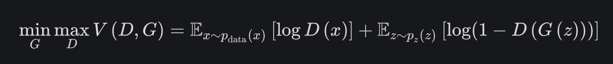

<!doctype html>
<html>
<head>
    <meta charset="utf-8">
    <meta name="viewport" content="width=device-width, initial-scale=1.0, maximum-scale=1.0, user-scalable=no">

    <title>Как работают GAN модели?</title>

    <link rel="stylesheet" href="css/reveal.css">
    <link rel="stylesheet" href="css/theme/black.css">

    <!-- Theme used for syntax highlighting of code -->
    <link rel="stylesheet" href="lib/css/zenburn.css">

    <!-- Printing and PDF exports -->
    <script>
        var link = document.createElement('link');
        link.rel = 'stylesheet';
        link.type = 'text/css';
        link.href = window.location.search.match(/print-pdf/gi) ? 'css/print/pdf.css' : 'css/print/paper.css';
        document.getElementsByTagName('head')[0].appendChild(link);
    </script>
    <style>
        .info {
            display: inline-block;
        }

        .textclass {
            float: left;
            width: 500px;
            height: 227px;
            line-height: 227px;
        }

        .imageclass {
            float: right;
            width: 200px;
            height: 227px;
        }
    </style>
</head>
<body>
<div class="reveal">
    <div class="slides">

<!-------------------------------------------------------------------------------------------------->

        <section id="00" data-markdown="" data-background="img/00-background.png">
            <script type="text/template">
                ## Как работают GAN модели?
                <span class="textclass">Nick Linker</span>
            </script>
        </section>
        <section id="01" data-markdown="">
            <script type="text/template">
                ### Скромный слайд

                 - занимаюсь разработкой программного обеспечения N лет
                 - в-основном, бэкенд
                 - сталкивался с разными задачами, от оконных библиотек до бигдаты
                 - попутно изучил много языков программирования и инструментов
            </script>
        </section>
        <section id="02" data-markdown="">
            <script type="text/template">
                ### Как вообще что-то генерировать?
                 - Генератор случайных чисел
                 - ...с заданным распределением

                
            </script>
        </section>
        <section id="03" data-markdown="">
            <script type="text/template">
                ### Рендер?

                
            </script>
        </section>
        <section id="04" data-markdown="">
            <script type="text/template">
                ### Что-то более сложное?

                
            </script>
        </section>
        <section id="05" data-markdown="">
            <script type="text/template">
                ### GAN, интуитивно
                - Фальшивомонетчик (Генератор)
                - Банкир (Дискриминатор)

                
            </script>
        </section>
        <section id="06" data-markdown="">
            <script type="text/template">
                ### GAN, общая идея
                - Генератор G vs дискриминатор D
                - Состязание между ними

                
            </script>
        </section>
        <section id="07" data-markdown="">
            <script type="text/template">
                ### GAN, функция потерь

                - Первая часть: когда ошибается D на оригинальных данных
                - Вторая часть: когда ошибается D на сгенерированных данных


                
            </script>
        </section>
        <section id="08" data-markdown="">
            <script type="text/template">
                ### Откуда взялся min(max(...))

                TODO
            </script>
        </section>
        <section id="x3" data-markdown="">
            <script type="text/template">
                ###
            </script>
        </section>
        <section id="x4" data-markdown="">
            <script type="text/template">
                ###
            </script>
        </section>
        <section id="x5" data-markdown="">
            <script type="text/template">
                ###
            </script>
        </section>
        <section id="x6" data-markdown="">
            <script type="text/template">
                ###
            </script>
        </section>
        <section id="x7" data-markdown="">
            <script type="text/template">
                ###
            </script>
        </section>


<!-------------------------------------------------------------------------------------------------->

    </div>
</div>

<script src="lib/js/head.min.js"></script>
<script src="js/reveal.js"></script>

<script>
    // More info about config & dependencies:
    // - https://github.com/hakimel/reveal.js#configuration
    // - https://github.com/hakimel/reveal.js#dependencies
    Reveal.initialize({
        dependencies: [
            {src: 'plugin/markdown/marked.js'},
            {src: 'plugin/markdown/markdown.js'},
            {src: 'plugin/notes/notes.js', async: true},
            {
                src: 'plugin/highlight/highlight.js',
                async: true,
                callback: function () { hljs.initHighlightingOnLoad(); }
            }
        ]
    });
</script>
</body>
</html>
